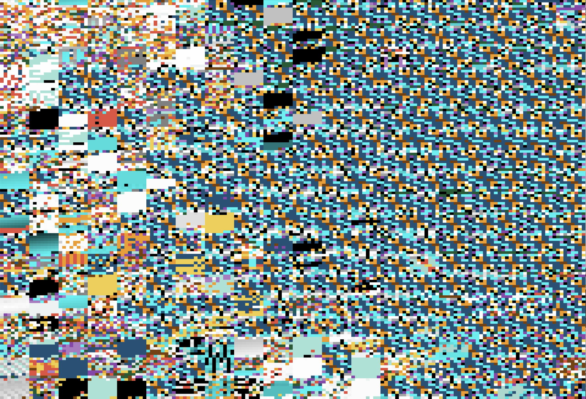
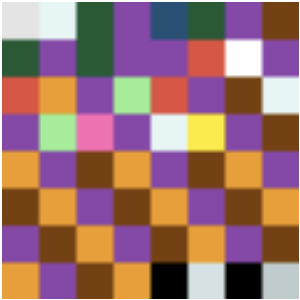
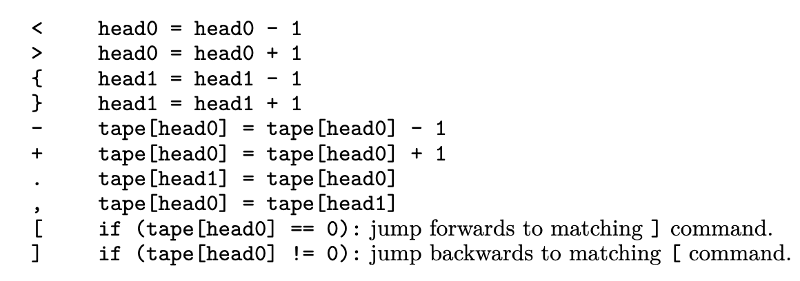
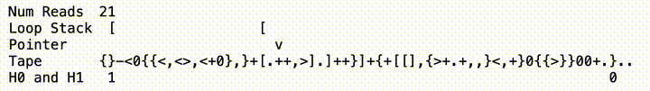
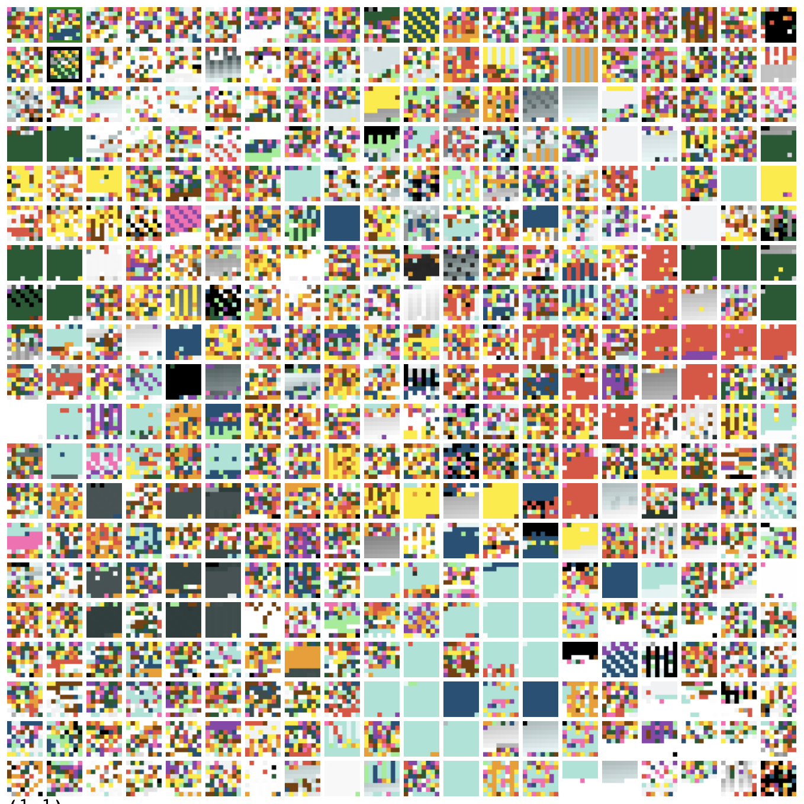
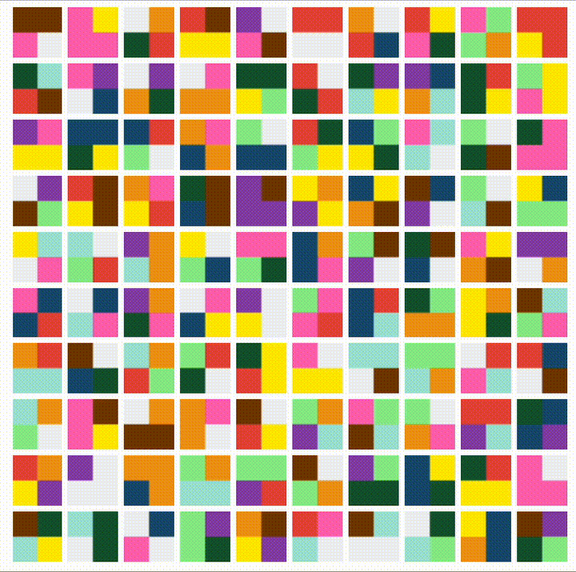

Petri Cells BFF: A Simulation of "Artificial Life"
This is the first high-complexity replicator I got, in an early version of the program. It's the result that made me jump out of my chair, and say, “I am a god”:

What is Petri Cells BFF?
I heard about this Sabine Hossenfelder video discussing a a paper that was released in august, on how “artificial life” in the form of executable programs could emerge organically from noise.
This paper sits at the intersection of several different topics which are very interesting to me - languages and computation, clever visualizations, origins of life, virtual evolution, and more. So I created an interactive visualization of the concept.
I more ore less reproduce the research paper, with only slight modifications, and a different UI. This writeup will describe how the simulation works, and some of the results.
You’ve probably heard of the the prime example of cellular automata, Conway’s Game of Life. Example here, a program delivers emergent complexity out of simple interaction rules.
There are many cellular automata variants with hard-coded rules for cell interaction. But let’s take things a step further: what if we allow variation in how the different cells on the grid behave?
In this project, every cell is is a self-contained computer program. These programs are composed of 10 principle executable “instructions”, which I will discuss in more detail later. For the purpose of visualization, we can assign each instruction a unique color. As the default setting, each program will be 64 instructions long. Then, each program can be represented as an 8x8 square “cell”, like this.

Okay. If the cells are each literally self-contained programs, what is the programming language? For that, we repurpose a language which, though esoteric, you may have heard of: Brainfuck. A super-minimalist language, it was made with the goal of creating the smallest possible compiler for a Turing-complete language.
Supposedly, Brainfuck (BF) wasn’t meant for practical uses, but rather as a theoretical exercise in language design. That doesn’t apply here, though, because the language is actually chosen for it’s practicality. Because the syntax is so minimalist, we can randomly create any program, and it will be executable.
Actually, we are not going to be using vanilla BF, but rather, a variant designed for programs to modify themselves, “BFF”. Whereas standard BF takes in an input and returns an output, BFF will write to the same tape that it reads from, modifying itself in real-time.
The instruction set for BFF is below.
 head0 = head0 + 1; { head1 = head1 - 1; } head1 = head1 + 1; - tape[head0] = tape[head0] - 1; + tape[head0] =; tape[head0] + 1; . tape[head1] = tape[head0]; , tape[head0] = tape[head1]; [ if (tape[head0] == 0): jump forwards to matching ] command.; ] if (tape[head0] != 0): jump backwards to matching [ command.">
There are a few other rules to cover. The program terminates if it reaches a limit on the number of reads (2^10 for me, 2^13 in the paper). If a value appears in the program which is not in the instruction set, it will not be executed - in theory, this can be used to store memory.
Picture each program/cell as an array of integers (in the original paper, they’re arrays of bytes). 9 of those
values map to the instructions listed above - your "<"s, your "]"s, etc. The value
of
0
is read to determine whether to enter/exit loops. Everything else is a no-op.
To play with and test the BFF interpreter, I built a visual version.

On the backend, I store programs as arrays of integers, but I also can print a program as a human-readable-string that read as Brainfuck code. If you click on a cell, it will give you both formats. You can think of the human-readable-string format as the “lossy” format, and the integer-array format as the “lossless” format.
From what I can tell, the original research paper just stores all of the programs as strings. This has a few advantages (and probably some disadvantages), and is one of the biggest ways that our implementations differ. I’ll discuss the language mapping more close to the end of this post.
Either way, we now have an interpreter for executing these programs. We can use it in really cool ways to recursively recombine programs with each other.
To combine programs with each other and make something new, there are 3 steps:
- The programs are concatenated, literally like concatenating arrays or strings, into one program.
- The program is executed, using the compiler for BFF (self-modifying Brainfuck). Since the program makes changes to itself, the result will be a modified program.
- The program is split in half, resulting in 2 new programs.
And the two new programs take the place of the original programs. This process can be expressed as one line of
code: a, b = split(execBff(a + b)).
Grid Interactions
Now that you know the chemistry behind transforming 2 programs into 2 programs, we can introduce: THE GRID.

The rules for the grid are quite simple. Each epoch, we iterate through all of the cells in the grid. The cell randomly chooses another cell with in its “radius” of adjacency (by default, no more than 2 away on each axis). We skip a cell if it the cell it’s trying to pair with has already been reacted with in the same epoch (this probably helps with parallel processing in the original, but doesn’t make a big difference in my version). The cells react. Rinse and repeat.
At risk of burying the interesting bit, if you run this simulation, then some of the programs will spontaneously acquire the ability to self-replicate and dominate the grid.
Speaking about “artificial life”, one little issue: scientists still can’t agree about what “life” means. But one thing they do agree on is that the ability to self-replicate is part of it. This is why most of the studies on the “origin of life” focus on reproduction. -Sabine
What I like about the “life” that emerges is how much of a stark phase transition it is. You don’t have to squint and imagine it. In many cases, a pattern will suddenly dominate the grid in an undeniable way.

Early Signs of Life
What we quickly noticed, with the default settings (a small grid, no noise), that there are basically 2 types of life which come to dominate.
Firstly, some life comes about almost immediately in the chaotic conditions under which the board is initialized, yielding some interesting patterns. For brevity, I will call this kind of life “complex life”.

No matter how many times I see this, I always get excited when it occurs. It never gets old.
These early-game replicators are some of the coolest, but they’re rare, only occurring maybe 1 out of every 10 runs. The strategy for finding them is to spam restart the simulation, letting it run no more than 200 epochs, until you get one. And when it comes to complex life, you’ll know it when you see it.
The second kind of life is very basic bi-color patterns which emerge later on. These are actually “sub-strings” (patterns within the cell) which propagate themselves outward eventually to neighboring cells, and eventually the whole grid. I’ll call these replicators “simple life”

Another thing you notice is the distinction between “surviving” and “replicating”. Most cells will eventually settle into a state that is relatively change-resistant. There is a surprising level of consistency within the board, as most can last a number of epochs with relatively few changes. Becoming a “persister” is in itself is a kind of adaptation, so to speak. But the replicators take things quite a step further than the pesisteres, by multiplying themselves across the grid.
Noise
After a while, I got bored of this, so I introduced of noise options. The options are “kill cells” and “kill instructions”.
Kill cells will randomly pick a certain number of cells from the grid and replace them with entirely new random instruction sets.
Killing cells reliably creates complex life. If you run program long enough while killing cells at a 3% rate, it will virtually always result in an interesting pattern coming to dominate the board.

I attribute this to the power of RNG. The original paper seems to downplay the need for background random mutations, and emphasize that life can emerge merely from interactions between cells. Contrary to this, I found that if you’re after complex life, noise definitely helps.
How I would describe it is, after the early stage of the simulation, the game state becomes “ossified”. The cells have to become change-resistant, and there is not enough entropy in the system to support the amount of variance required to optimally seek out complex replicators.
This explains why, under default conditions, complex life tends to emerge early on. Since the grid is randomly initialized, there is a lot of variance in the system. Later, replicators do emerge eventually, but only as simple life, because there’s not enough bandwidth for anything more complex.
Kill instructions is another kind of noise. Instead of picking entire cells to kill, it will randomly replace individual instructions (codes) across the board.
The effects of this action are paradoxical and interesting. If life has not yet emerged, then it will make it harder for it to emerge in the first place. But if life has already emerged, and you subsequently turn on “kill instructions”, it will stimulate the changes and evolution of that life.

This is interesting to watch. In the absence of “kill cell” mutations, mutating and evolving life is actually quire rare. Complex life usually maintains a stagnant, unchanging phenotype. But if you introduce this kind of noise, then it will consistently and continually change.
It’s unsurprising that noise would have the effect of “shuffling” the genome, but it is quite surprising that the cells are resistant enough that they maintain the ability to self-replicate.
Other customizations
Cell Size
By default, a program is 64 instructions long - a square number, so it can fit into a cell. But there’s no reason it can’t be any other square number! I implemented the ability to create different-length programs: 49, 36, 25, 15, and so on. When you run the sim with smaller-sized programs, one thing you notice is that terminal states are more likely. Here, “terminal state” refers to a static, totally unchanging board.

To some extent, this is expected, because if programs are smaller, there are fewer permutations. It also makes me wonder if all programs will eventually resolve into either a terminal or looping state. In principle, the answer is yes, but how long will it take? Furthermore, “endgame” states are likely to have replicators, which makes the board look ordered - a fact which runs contrary to the intuitions based on entropy (or does it?). I should study this more.
Unique Cell Counter
The original paper computes entropy and complexity precisely with proprietary formulas. I don’t, but I do count the number of unique cells each epoch, which works surprisingly well as a proxy. The interesting result here is that replicators are heterogenous. Some are homogenous, allowing only a couple variations, where others are heterogeneous, allowing hundreds of different variants, especially at first.
I’m not sure which I like more. Despite the diversity of the the heterogeneous replicators, which allow for many subtle variants, there is rarely any confusion whether a group of cells is part of the same “species”.
History
To save time, you may want to run the simulations on high speeds, but that can make it easy to miss important events. Therefore, these simulations store their history, allowing you to rewind (even run the simulation in reverse).
To save on space, grid states are saved in 50-epoch increments when you run the animation. If you’re still worried about space, you can turn it off (for the most part) by running this command from the console.
controller.miscSettings.storeStateWhenRunning = false;
Interpreter randomizer
For the purpose of this simulation, I arbitrarily map the underlying 32-bit value of 1 to “<”, I map 2 to “>”, I map 3 to “{“, and so on for the BFF language. Thus, if you have a “>” instruction, and you add 1 to it, you get a “{“. This impacts how the programs might mutate.
But there’s no reason, in principle, to privilege this particular mapping. We could, just as well, have 1 map to “{“, 2 map to “<“, or whatever.
Therefore, my simulation also supports the ability to reconfigure the language, by editing (or even randomizing) the mapping between the underlying data values and the BFF instructions. This impacts both the grid and the BFF interpreter. Changes to the language will come into effect as soon as you advance either of these visualizations. It will update the colors on the grid to reflect the update.
Cell Viewer
If you click on a cell, it will receive a black border, and the details of the cell will appear at the bottom of the grid. The details consist of its location, it’s integer-array representation, and its human-readable-string representation.
From there, you can edit the contents of the cell. Changes to the cell will take effect on the grid.
As that cell reacts with other cells, the cells that it reacts with will receive a thin green border.
Randomizing the pointer start position
When two cells are paired up, their programs are concatenated in sequence. This gives the first cell a big advantage over other cell, because the pointer starts at the beginning of the sequence, executing those instructions first, and it might not even reach the second half. To remedy this, I could introduce a variant which drops the pointer randomly somewhere, and ends when it makes a full rotation.
You can turn on this setting by running this command in the console.
controller.miscSettings.toRandomPivot = true;
I have noticed anecdotally that complex life does not emerge when this setting is switched on.
Super large grids
I'm still working on this: (1) Getting a better UI for super large grids. Looking to adopt a framework like PixiJS to allow for this. (2) I'm hoping there's a way to get my JS code even more performant than it is, to enable the super large grids. Feel free to make suggestions and contribute.